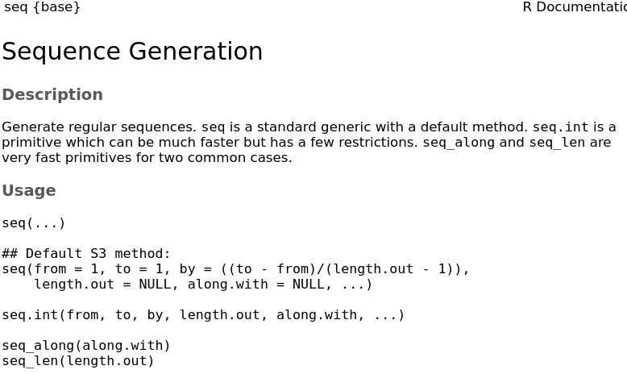
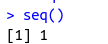
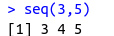
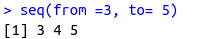
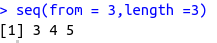
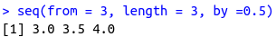
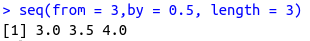

seq()
### Functions: seq, paste, rep
?seq # starting with the seq function

seq() # just using the default settings

~~~~~~~~~~~~~~~~~~~~~~~~~~~~~~~~~
# simple sequence from 3 to 5
seq(3,5)

seq(from = 3,to = 5)

~~~~~~~~~~~~~~~~~~~~~~~~~~~~~~~~~
# using length
seq(from = 3,length =3)

~~~~~~~~~~~~~~~~~~~~~~~~~~~~~~~~~
# step manipulations
seq(from = 3, length = 3, by =0.5)

seq(from = 3,by = 0.5, length = 3)
